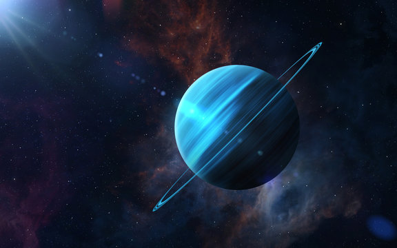

Uranus

- The Uranus
-
The seventh planet from the Sun with the third largest diameter in our solar system,
Uranus is very cold and windy. The ice giant is surrounded by 13 faint rings and 27
small moons as it rotates at a nearly 90-degree angle from the plane of its orbit.
This unique tilt makes Uranus appear to spin sideways, orbiting the Sun like a rolling ball.
-
Uranus is made of water, methane, and ammonia fluids above a small rocky center.
Its atmosphere is made of hydrogen and helium like Jupiter and Saturn, but it also has methane.
The methane makes Uranus blue.
- Planet Type
- Uranus is a Jovian planet also called an ice giant (instead of a gas giant)
- Moons
- Uranus has 27 known moons
- Orbital Period
- One year on Uranus is the same as 84 years on Earth
- Rotation
- One day on Uranus lasts a little over 17 hours (17 hours and 14 minutes, to be exact).
- Diameter
- 31,765 miles (51,118 kilometers)
- Mass
- Volume
- Composition/Structure
-
The liquid core makes up 80 percent of the mass of the planet,
mostly comprised of water, methane, and ammonia ice, though it only extends
to about 20 percent of the radius.
-
The planet's core heats up to 9,000 degrees Fahrenheit (4,982 degrees Celsius).
- Temperature
- Facts
- The atmosphere of Uranus contains ices
- It was the first planet to be discovered through a telescope
- You could fit 63 Earths inside Uranus.
- Uranus is the only planet not named after a Roman God
- Uranus spins the opposite direction as Earth and most other planets.
- References